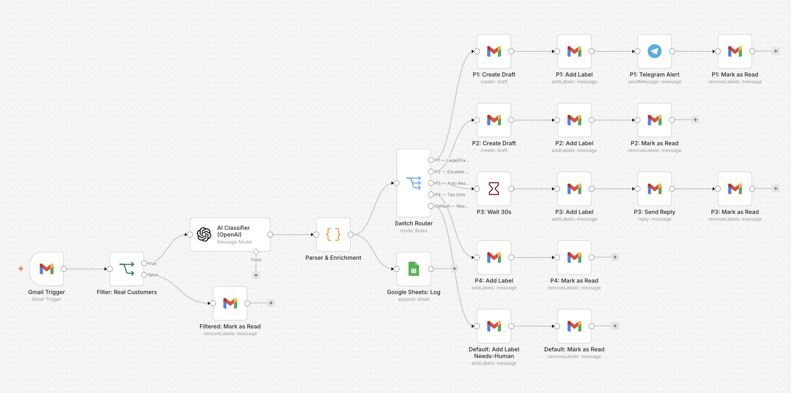
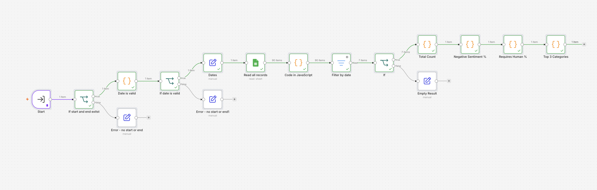
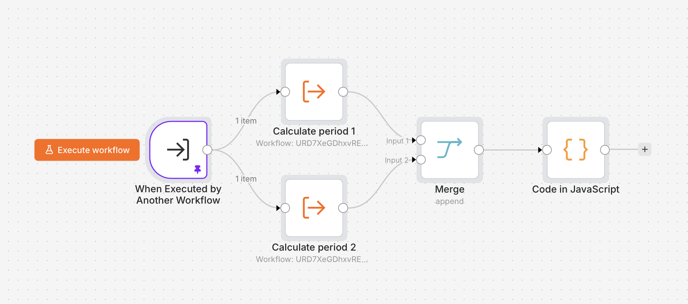
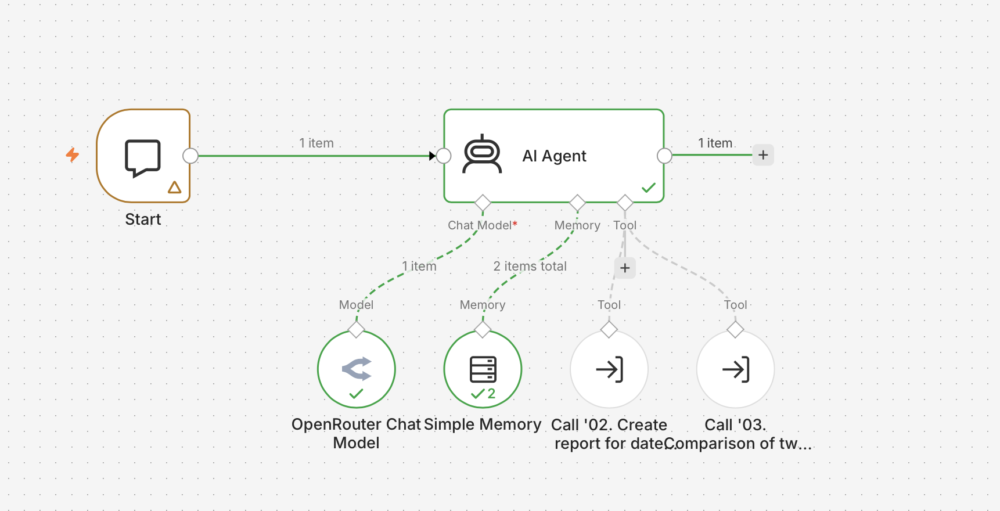
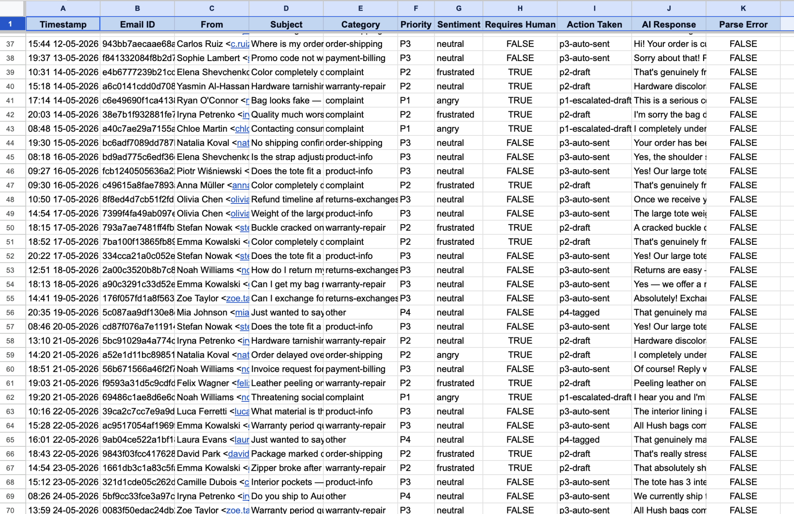
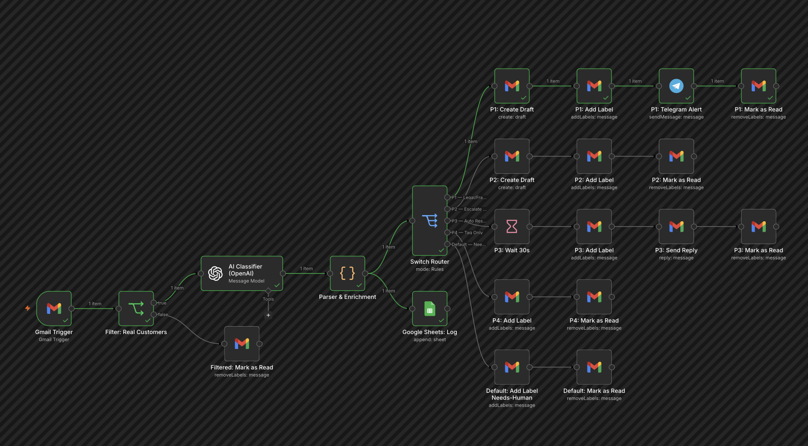
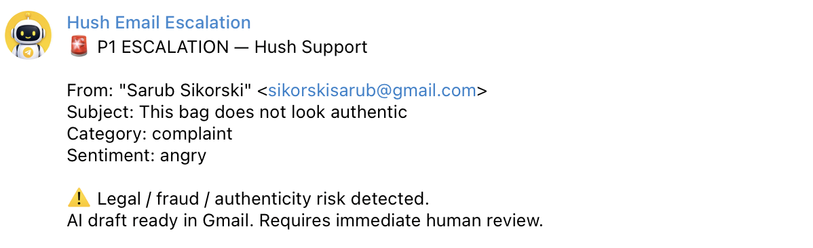
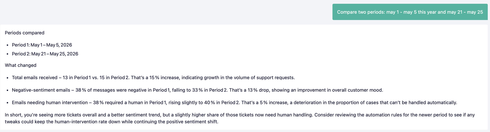

Context
Company: Hush - B2C premium bag e-commerce
Industry: Online Retail (Fashion Accessories)
Target clients: End consumers purchasing bags online
Support volume: 15 -30 emails/day
Team: 1 owner managing support manually
Core problem: Every email handled manually - no triage, no prioritization, no analytics
Problem
| Metric | Value | Issue |
|---|---|---|
| Email handling | 100% manual | No triage or prioritization |
| Response time | Hours to days | Urgent cases missed in queue |
| Escalation detection | None | Legal threats not flagged immediately |
| Support analytics | None | No data on categories, sentiment, volume |
| Human time wasted | 2-4 hrs/day | Standard FAQs answered manually every time |
The owner was answering every email manually - from “what’s the zipper material?” to legal threats - with no system to separate urgent from routine. At 15-30 emails per day, this consumed a significant part of the working day with no prioritization or visibility into patterns.
Solution
Built a 4-workflow AI email support system that classifies, routes, responds, and analyzes:
Gmail (unread) → Filter → AI Classifier → Parser
↓
Switch Router
↓
┌───────────┬───────────┬───────────┬───────────┐
P1 P2 P3 P4 Default
Draft+Telegram Draft Auto-Reply Tag Needs-Human
└───────────┴───────────┴───────────┴───────────┘
↓
Google Sheets Log
↓
Analytics Agent (Chat UI)WF1 - Email Support Automation
Processes every incoming email automatically. AI classifies priority (P1-P4), category, sentiment, and generates a suggested response. Routes to correct action based on priority and requires_human flag.
WF2 - Report for Period
On-demand analytics tool. Accepts a date range and returns 4 metrics: total emails, % negative sentiment, % requiring human intervention, top 3 categories.
WF3 - Comparison of Two Periods
Compares two date ranges side by side. Returns % change for each metric with plain-language conclusions: improvement, deterioration, growth, decline, or stable.
WF4 - Customer Support Analyst (AI Agent)
Natural language chat interface. The owner asks questions in plain text - the agent detects dates in any format, selects the right tool, and returns a readable summary.
Process
1. Prompt Design
- Full system prompt rewritten for Hush (adapted from course template)
- 6 email categories specific to bag e-commerce
- OVERRIDE rules for human requests and influencer inquiries
- Language auto-detection: responds in customer’s language
- Temperature 0.2 for consistent JSON output
2. Priority System
| Priority | Trigger | Action |
|---|---|---|
| P1 | Legal threat, fraud, authenticity dispute, media threat | Gmail draft + Telegram alert |
| P2 | Damaged item, delay 7d+, defective product, angry tone | Gmail draft only |
| P3 | Standard inquiry - order status, product info, returns | Auto-reply after 30s |
| P4 | Thank you, positive feedback, low-urgency | Tag only, no reply |
| Default | requires_human=true, explicit human request | Needs-Human label |
3. n8n Workflow Architecture
| Workflow | Trigger | Function |
|---|---|---|
| WF1 - Email Automation | Gmail Trigger (poll) | Filter → AI → Route → Act → Log |
| WF2 - Period Report | Sub-workflow call | Read Sheets → Filter → 4 metrics |
| WF3 - Period Comparison | Sub-workflow call | Calls WF2 twice → merge → % change |
| WF4 - Analyst Agent | Chat Trigger | NL query → tool selection → readable answer |
4. Escalation Rules
| Rule | Trigger | Result |
|---|---|---|
| Legal threat | Lawyer, lawsuit, chargeback, consumer authority | P1 + Telegram |
| Authenticity dispute | Fake, counterfeit, not as described | P1 + Telegram |
| Media threat | Press, social media, going public | P1 + Telegram |
| Human request | “connect me with a real person” | Default branch |
| Influencer inquiry | Collaboration, gifting, followers, sponsorship | Default branch |
| Aggressive tone | Threatening or abusive language | P2 minimum |
Results
| Metric | Before | After | Change |
|---|---|---|---|
| Email triage | 100% manual | 100% automated | ↓ 0 min/email |
| Time spent on support | 2-4 hrs/day | ~20 min/day (review only) | ↓ 85% |
| P1 alert speed | Never | Instant Telegram | New |
| P3 response time | Hours | 30 seconds | ↓ 99% |
| Support analytics | None | On-demand via chat | New |
| Period comparison | None | Automated % change | New |
| Duplicate processing | Risk | Eliminated | Fixed |
Tech Stack
- n8n (self-hosted) - workflow automation engine
- OpenAI GPT-4o-mini - email classification and response generation
- Gmail API - trigger, drafts, labels, auto-replies
- Google Sheets - support log and analytics data source
- Telegram Bot API - P1 escalation alerts to owner
- OpenRouter - LLM provider for AI Agent chat interface
What Works
- Full end-to-end automation: email arrives → classified → routed → responded → logged
- P1 legal/fraud alerts fire instantly to owner via Telegram
- P3 standard inquiries answered automatically in 30 seconds
- Duplicate processing eliminated - every email marked as read after processing
- Analytics agent answers plain-language questions about support performance
- Language auto-detection - responds in customer’s language
- Empty period handling - analytics workflows return clean zeros, never crash
What Can Be Improved
- Timestamp format - custom format (HH:MM DD-MM-YYYY) complicates date filtering; switch to ISO 8601 in future
- P2 Telegram alert - currently draft-only; add optional alert for high-volume periods
- Sentiment trends - track sentiment per category over time, not just overall
- Auto-reply for P4 - optionally send a short thank-you reply to positive feedback
Development Plan
- Switch timestamp to ISO format → simplifies analytics queries
- Add P2 Telegram alert with configurable threshold
- Build category trend chart - weekly breakdown by category
- Connect dedicated e-mail inbox instead of Gmail
- Add weekly automated report → schedule WF2 every Monday to Telegram
Loom Screencast
Screenshots
WF1 - Email Support Automation canvas

WF2 - Report for Period canvas

WF3 - Comparison of Two Periods canvas

WF4 - Customer Support Analyst canvas

Google Sheets log

Execution History - P1 test

Telegram P1 alert

AI Agent chat response

GitHub Repository
🔗 https://github.com/vitaliiburorichnyi/hush-email-automation